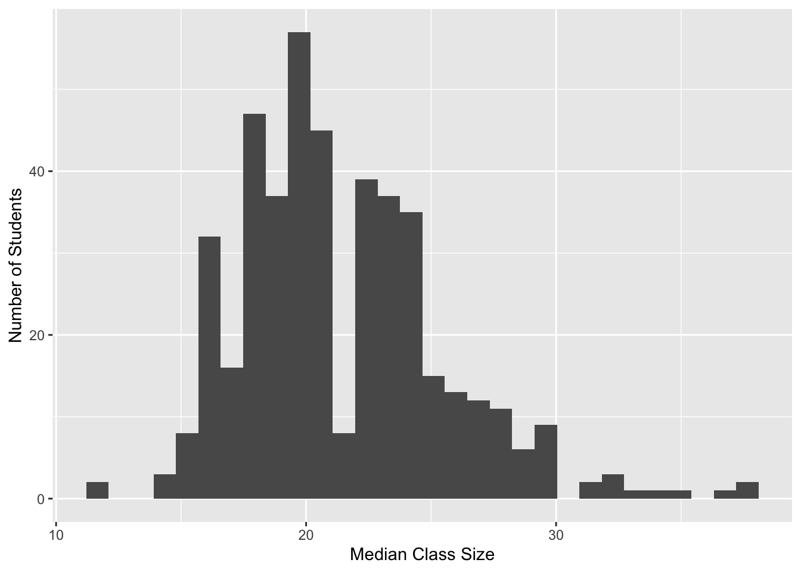

── Attaching core tidyverse packages ──────────────────────── tidyverse 2.0.0 ──
✔ dplyr 1.1.4 ✔ readr 2.1.5
✔ forcats 1.0.0 ✔ stringr 1.5.1
✔ ggplot2 3.5.1 ✔ tibble 3.2.1
✔ lubridate 1.9.3 ✔ tidyr 1.3.1
✔ purrr 1.0.2
── Conflicts ────────────────────────────────────────── tidyverse_conflicts() ──
✖ dplyr::filter() masks stats::filter()
✖ dplyr::lag() masks stats::lag()
ℹ Use the conflicted package (<http://conflicted.r-lib.org/>) to force all conflicts to become errors14 Joining
# Exercise 1: Where are my keys?
# Part a: mismatched key names
students_2 <- data.frame(
student = c("D", "E", "F"),
class = c("COMP 101", "BIOL 101", "POLI 101")
)
enrollments_2 <- data.frame(
course = c("ART 101", "BIOL 101", "COMP 101"),
enrollment = c(18, 20, 19)
)
# correct left join by specifying key columns
students_2 %>%
left_join(enrollments_2, join_by(class == course)) student class enrollment
1 D COMP 101 19
2 E BIOL 101 20
3 F POLI 101 NA# result: D→19, E→20, F→NA
# Part c/d: joining on duplicate-named columns class & grade
students_3 <- data.frame(
student = c("Y","Y","Z","Z"),
class = c("COMP 101","BIOL 101","POLI 101","COMP 101"),
grade = c("B","S","C","A")
)
enrollments_3 <- data.frame(
class = c("ART 101","BIOL 101","COMP 101"),
grade = c("B","A","A-"),
enrollment = c(20,18,19)
)
# only join on class, not grade
students_3 %>%
left_join(enrollments_3, join_by(class == class)) student class grade.x grade.y enrollment
1 Y COMP 101 B A- 19
2 Y BIOL 101 S A 18
3 Z POLI 101 C <NA> NA
4 Z COMP 101 A A- 19# grade.x = student grade; grade.y = average course grade
# Exercise 2: More small practice
voters <- data.frame(
id = c("A","D","E","F","G"),
times_voted = c(2,4,17,6,20)
)
contact <- data.frame(
name = c("A","B","C","D"),
address = c("summit","grand","snelling","fairview"),
age = c(24,89,43,38)
)
# 1. contact info for people who HAVEN'T voted
anti_join(contact, voters, by = c("name" = "id")) name address age
1 B grand 89
2 C snelling 43 name address age
1 A summit 24
2 D fairview 38 id times_voted address age
1 A 2 summit 24
2 D 4 fairview 38
3 E 17 <NA> NA
4 F 6 <NA> NA
5 G 20 <NA> NA
6 B NA grand 89
7 C NA snelling 43# 4. add contact info to the voting roster where possible
left_join(voters, contact, by = c("id" = "name")) id times_voted address age
1 A 2 summit 24
2 D 4 fairview 38
3 E 17 <NA> NA
4 F 6 <NA> NA
5 G 20 <NA> NA# Exercise 3: Bigger datasets
grades <- read.csv("https://mac-stat.github.io/data/grades.csv") %>%
distinct(sid, sessionID, .keep_all = TRUE)
courses <- read.csv("https://mac-stat.github.io/data/courses.csv")
# how many rows and columns?
dim(grades) # grades: rows × cols[1] 5844 3[1] 1718 6# Exercise 4: Class size
# Part a: combine cross-listed sessions by summing enrollments
courses_combined <- courses %>%
group_by(sessionID) %>%
summarize(enroll = sum(enroll), .groups = "drop")
dim(courses_combined) # should be 1695 × 2[1] 1695 2# Part b: median class size overall
courses_combined %>%
summarize(median_class_size = median(enroll))# A tibble: 1 × 1
median_class_size
<int>
1 18# Part c: median class size experienced by each student
student_class_size <- grades %>%
left_join(courses_combined, by = "sessionID") %>%
group_by(sid) %>%
summarize(median_size = median(enroll), .groups = "drop")
head(student_class_size)# A tibble: 6 × 2
sid median_size
<chr> <dbl>
1 S31185 23.5
2 S31188 21
3 S31191 25
4 S31194 15
5 S31197 24
6 S31200 21 # Part d: histogram of median class sizes per student
ggplot(student_class_size, aes(x = median_size)) +
geom_histogram() +
labs(x = "Median Class Size", y = "Number of Students")`stat_bin()` using `bins = 30`. Pick better value with `binwidth`.
# Exercise 5: Narrowing in on classes
# Part a: students in session1986
grades %>%
filter(sessionID == "session1986") sid grade sessionID
1 S31401 B+ session1986
2 S32247 B session1986# Part b: students in department E courses
dept_E <- courses %>% filter(dept == "E")
grades %>%
semi_join(dept_E, by = "sessionID") %>%
distinct(sid) sid
1 S31245
2 S31470
3 S31938
4 S31968
5 S32022
6 S32046
7 S32226
8 S32415
9 S32484# Exercise 6: All the wrangling
# GPA conversion table
gpa_conversion <- tibble(
grade = c("A+","A","A-","B+","B","B-","C+","C","C-","D+","D","D-","NC","AU","S"),
gp = c(4.3,4.0,3.7,3.3,3.0,2.7,2.3,2.0,1.7,1.3,1.0,0.7,0.0,NA,NA)
)
# Part a: total student enrollments by department
grades %>%
left_join(courses_combined, by = "sessionID") %>%
left_join(courses %>% select(sessionID, dept), by = "sessionID") %>%
count(dept, name = "total_enrollments") %>%
arrange(desc(total_enrollments))Warning in left_join(., courses %>% select(sessionID, dept), by = "sessionID"): Detected an unexpected many-to-many relationship between `x` and `y`.
ℹ Row 64 of `x` matches multiple rows in `y`.
ℹ Row 807 of `y` matches multiple rows in `x`.
ℹ If a many-to-many relationship is expected, set `relationship =
"many-to-many"` to silence this warning. dept total_enrollments
1 d 483
2 M 410
3 m 363
4 O 359
5 W 336
6 q 318
7 F 296
8 k 265
9 j 249
10 D 240
11 C 237
12 G 237
13 R 195
14 n 191
15 i 177
16 Q 157
17 J 148
18 X 145
19 p 129
20 e 128
21 K 112
22 H 110
23 N 99
24 S 97
25 b 67
26 T 62
27 Y 57
28 t 56
29 L 50
30 V 50
31 g 34
32 s 31
33 o 27
34 I 26
35 P 26
36 B 24
37 U 24
38 E 12
39 A 2
40 l 1# Part b: GPA for each student
student_gpa <- grades %>%
left_join(gpa_conversion, by = "grade") %>%
group_by(sid) %>%
summarize(gpa = mean(gp, na.rm = TRUE), .groups = "drop")
head(student_gpa)# A tibble: 6 × 2
sid gpa
<chr> <dbl>
1 S31185 2.41
2 S31188 3.02
3 S31191 3.21
4 S31194 3.36
5 S31197 3.35
6 S31200 2.2 # Part c: median GPA across all students
student_gpa %>%
summarize(median_gpa = median(gpa, na.rm = TRUE))# A tibble: 1 × 1
median_gpa
<dbl>
1 3.47# Part d: fraction of grades below B+ (gp < 3.3)
grades %>%
left_join(gpa_conversion, by = "grade") %>%
summarize(fraction_below_Bplus = mean(gp < 3.3, na.rm = TRUE)) fraction_below_Bplus
1 0.2834776# Part e: GPA for each instructor
grades %>%
left_join(courses, by = "sessionID") %>%
left_join(gpa_conversion, by = "grade") %>%
group_by(iid) %>%
summarize(instructor_gpa = mean(gp, na.rm = TRUE), .groups = "drop") %>%
arrange(instructor_gpa)Warning in left_join(., courses, by = "sessionID"): Detected an unexpected many-to-many relationship between `x` and `y`.
ℹ Row 64 of `x` matches multiple rows in `y`.
ℹ Row 807 of `y` matches multiple rows in `x`.
ℹ If a many-to-many relationship is expected, set `relationship =
"many-to-many"` to silence this warning.# A tibble: 364 × 2
iid instructor_gpa
<chr> <dbl>
1 inst265 1.3
2 inst444 1.7
3 inst513 1.85
4 inst200 2
5 inst507 2.2
6 inst445 2.3
7 inst420 2.6
8 inst262 2.65
9 inst176 2.66
10 inst234 2.7
# ℹ 354 more rows